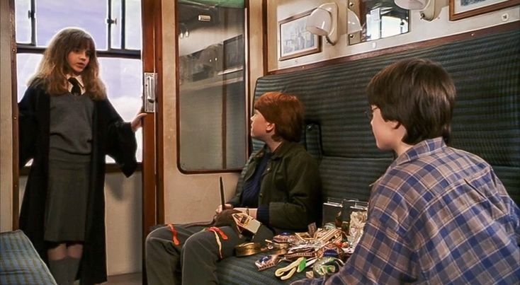

Hermione qui parle aux garçons
Vous êtes dans le train avec Ron. Vous mangez des bonbons fantomettes.
Une fille s'approche de vous, elle dit: "je m'appelle Hermione Granger. Tu es sûrement Harry Potter"
Tu réponds: "c'est moi Harry"
Elle dit: "il paraît que votre enfancee était terrible".
Vous dites: "pourquoi?"
Hermione dit: "je vais te raconter une histoire. Il était une fois un petit garçon prénommé Harry Potter. Il était dans sa maison, et soudain, tu sais qui est rentré dans la maison? Tu-sais-qui a tué ta maman et ton papa !"
Vous dites : "c'est horrible!"
Elle dit: "je sais que c'est horrible"
Tu en as marre
Tu parles avec Ron
